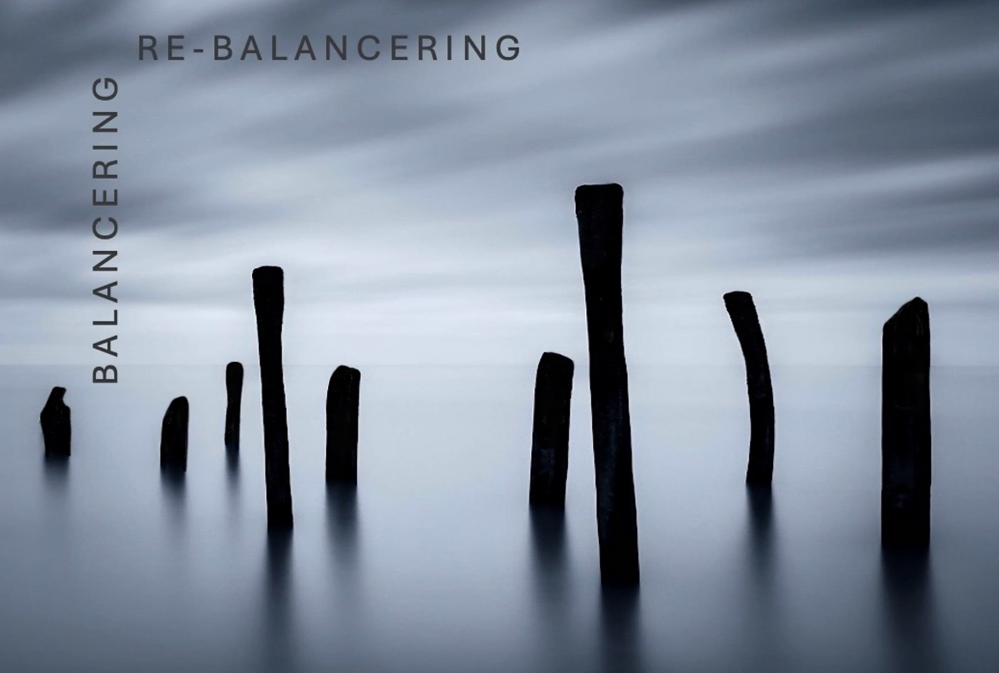

Essensen
Det der allerede er til stede
Et stille rum at vende tilbage til.
Dybt i ethvert levende system eksisterer en evne til at finde sin balance. Ikke noget vi skal tilføre udefra — men noget der allerede er til stede.
Her kan du mærke det igen.
Ord og stilhed om det der allerede er i balance i dig. Om nervesystemets visdom. Om det rum, hvori forandring bliver mulig — ikke fordi vi gør noget, men fordi vi holder op med at forsøge.
Ikke en guide der skal gennemføres, men et sted at vende tilbage til.
“Healing is not about getting rid of symptoms. It’s about an individual wholeness, that we remember instinctively the moment we touch it.”
James Jealous

"Healing is not about getting rid of symptoms. It's about an individual wholeness, that we remember instinctively the moment we touch it."
James Jealous
Det der allerede er til stede
Tre tilstande og bevægelsen imellem dem
Betingelserne og den uantastelige stilhed
"Medicine is not found in a healed wound, but in a wound that is weeping."
Matt Licata
Det der allerede er til stede
Tre tilstande i os alle
for re-balancering
Begreber og dynamikker